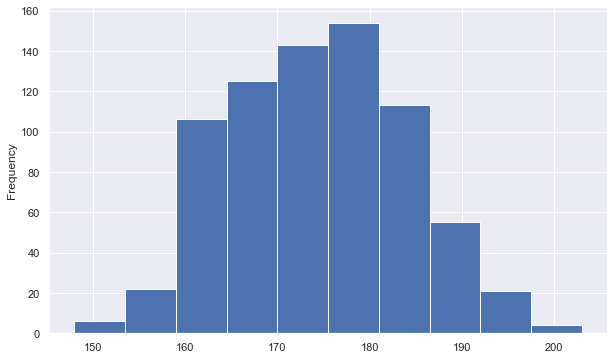
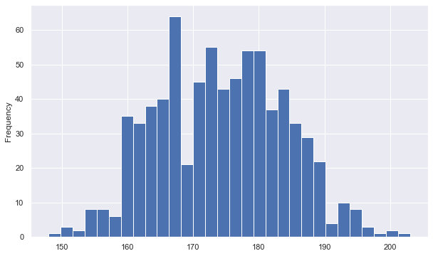
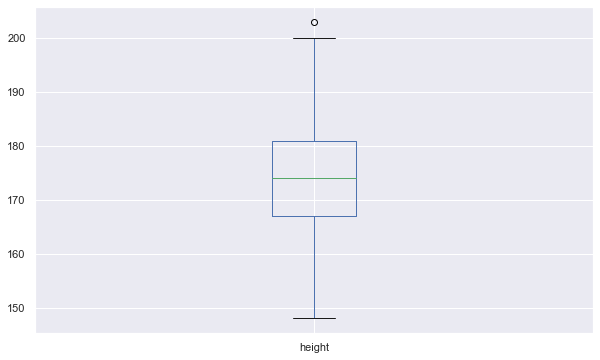
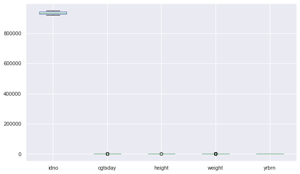
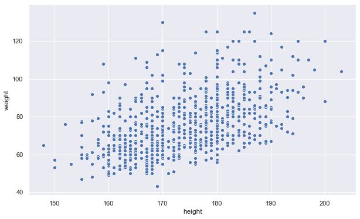

En god måde at udforske sit datasæt er ved at anvende visualiseringer. På den måde kan man visuelt orientere sig i, hvad data indeholder og hvordan data fordeler sig.
I dette afsnit bruges pakken seaborn til at danne visualiseringer. seaborn bygger ovenpå matplotlib, men giver visualiseringerne et mere moderne udseende, og giver flere muligheder for at passe visualiseringen til.
Fordi seaborn bygger ovenpå matplotlib skal begge biblioteker importeres (læg mærke til importkonventionerne). Derefter aktiveres seaborn med sns.set(). Når aktiveret erstatter seaborn standard matplotlib plots:
%matplotlib inline
import matplotlib.pyplot as plt
import seaborn as sns
sns.set()
Linjen %matplotlib inline er en såkaldt “magic function”. Den bruges, når man skriver Python i Jupyter Notebook, da den gør sådan, at plots printes direkte i notebooken. Hvis ikke den linje er kørt, vil plots dukke op i et vindue for sig (nogen gange er indstillingen dog sat til i forvejen).
Når man bruger seaborn sammen med pandas kan man lave visualiseringer/plots på to måder. Med den ene måde kalder man den specifikke visualiseringsfunktion fra seaborn og specificerer data, som skal bruges i visualisering. Med den anden måde referer man til den specifikke kolonne (series) fra dataframe, som man ønsker at visualisere og specificerer et plot (denne måde virker derfor kun til at visualisere én variabel).
Der er en række metoder tilknyttet specifikt til pandas dataframe og series, så man kan danne et plot direkte fra.
.plot.hist() danner fx et histogram over variablen:
sns.set(rc={'figure.figsize':(10,6)}) # Ændrer størrelsen af plots
ess2014['height'].plot.hist()
<AxesSubplot:ylabel='Frequency'>

Et histogram viser observationer som bjælker i intervaller sorteret efter værdi (lav til højest). På den måde kan man hurtigt danne sig et overblik over, hvordan data fordeler sig.
Af ovenstående ses fx at omkring 340 personer har en højde på omkring 168-173 cm. Desuden ses at meget få har en højde omkring 200 cm.
Størrelsen på bjælkerne kan ændres med argumentet bins = :
ess2014['height'].plot.hist(bins = 30)
<AxesSubplot:ylabel='Frequency'>

.plot.box() danner et boxplot over variablen:
ess2014['height'].plot.box()
<AxesSubplot:>

Et boxplot er en anden måde at se på fordelingen af en variabel. Den vandrette linje i midten er middelværdien. De øvrige linjer angiver (fra top til bund): minimum, 1. kvartil, 3. kvartil, maksimum.
Metoden kan også anvendes på en dataframe:
ess2014.plot.box()
<AxesSubplot:>

Ovenstående plot giver ikke meget mening, da variable ikke har sammenlignelige værdier, hvorfor y-aksen bliver helt tosset.
Hvis man har et datasættet med flere variable med sammenlignelige værdier, kan man visualisere disse ved at dannet et subset af datasættet og lave et plot (mere om dette senere).
Her er nogen andre plots, der kan dannes direkte på baggrund af en series (hvis variabeltypen tillader):
.plot.bar(): Danner et barplot over variablen.plot.pie(): Danner et cirkelplotsover variablen.plot.line(): Danner et linjeplotBarplots og cirkelplots egner sig bedre til kategoriske variable. Dog er kategoriske variable i datasættet (fx happy og ppltrst) lige nu kodet på en måde, der ikke tillader at lave plots over dem.
Dette gennemgås senere.
Plots kan også dannes ved først at refere specifikt til den plotting funtkion, som man vil bruge, og derefter specificere data.
Nedenstående linje danner et scatterplot for height og weight. Ved seaborn plottingfunktioner specificeres, hvilke værdier der skal udgøre x-aksen og hvilke, der skal udgøre y-aksen. seaborn forventer typisk series, så man kan specificere series direkte i funktionerne. Dog kan man også, som i nedenstående, specificere kolonne/variabelnavne og til sidst specificere data med argumentet data = :
sns.scatterplot(data = ess2014, x = 'height', y = 'weight')
<AxesSubplot:xlabel='height', ylabel='weight'>

Et scatterplot danner en prik for hver observations placering på to variable. Plottet egner sig derfor særdeles godt til at udforske umiddelbare sammenhænge (om en variabel er beslægtet med en anden).
Af ovenstående ses det, at vægt tenderer en smule til at stige i takt med højden (hvilket selvfølgelig ikke er overraskende).
Dan et histogram over varialben yrbrn i ESS2014DK datasættet.